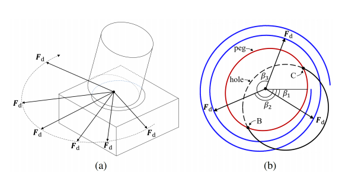
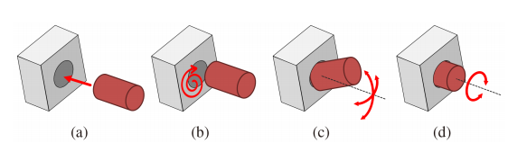
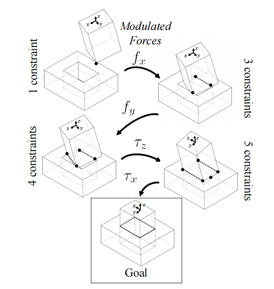
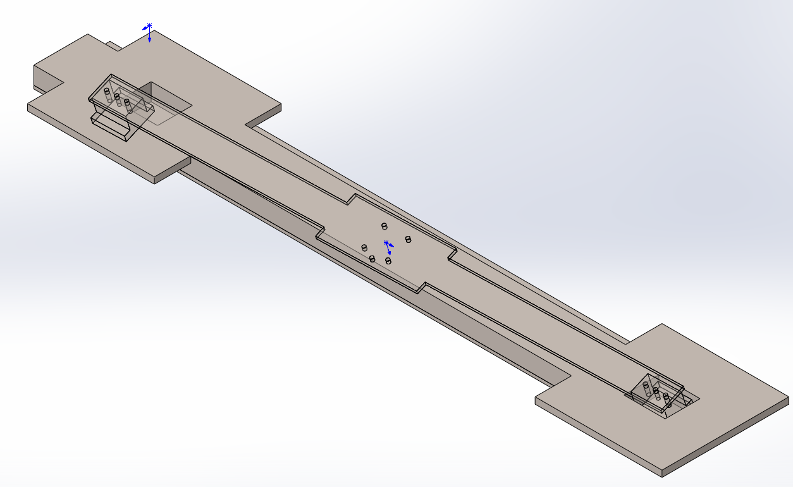
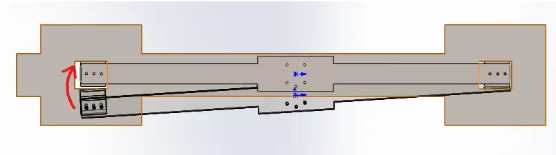
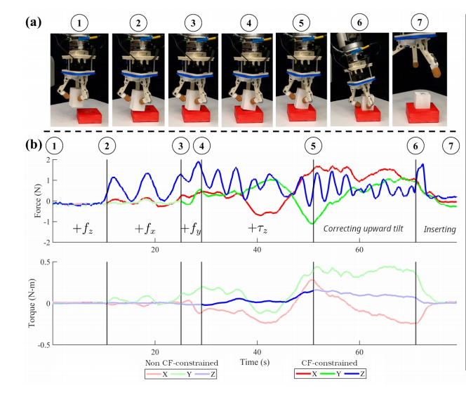

Dual Pegs in Hole Problem
文献调研
Compliance-Based Robotic Peg-in-Hole Assembly Strategy without Force Feedback
方法一：通过力传感器数据分析匹配接触状态
方法二：强化学习，通过采用不同的力和力矩实现最大奖励函数（包括钉位置，接触力和力矩）
方法三：环境吸引域，无力反馈下柔顺装配
假设从两点接触状态开始，通过施加时变力，在顺应方向时会自动滑入孔内。


Compliant Peg-in-Hole Assembly Using Partial Spiral Force Trajectory With Tilted Peg Posture
基于上一篇文献对于力方向进行限制，提高装配效率
Hole Detection Algorithm for Square Peg-in-Hole using Force-based Shape Recognition
1）通过绕轴旋转，受力分析辨识工件的形状
2）通过辨识得到的工件形状和实际形状对比判断孔方向
Development of Efficient Strategy for Square Peg-in-Hole Assembly Task
在底面平行的情况下，采用角度传感器检测角度偏差，再通过力/力矩信息分析位置误差
工作总结
1）特殊构型机械臂运动学，动力学建模及标定
2）标准构型下带力传感器可变形双方孔工件装配
装配方案：
- 一端入孔
从两点接触状态开始，已知孔中心相对于轴的方向，在对应方向上施加引导力，整体进行导纳控制，终止条件为三方向力误差小于5N and x方向转矩小于1N*m
问题：
1、不从两点接触状态开始就需要考虑寻孔问题
2、引导力给多少能从理论上确保单侧可成功滑入孔内？从两点接触状态开始，如果孔中心相对于轴的象限确定，在对应象限的对角线上施加一个力就可以滑入——象限位置可否由力传感器信息得到；象限位置不确定就尝试用小旋转力克服摩擦力（在原有力/力矩消失前不进行姿态柔顺）
3、参考误差的极限值与上述变量的关系
4、问题本质上类似于单方孔装配问题，区别在于力信息误差很大，可以考虑结合无力传感器方案，添加力信息从而提速
- 另一端入孔顺时针探索
保持下压力下进行导纳控制，同时当下压力满足阈值限制时叠加以孔内端点为原点进行顺时针探索，终止条件为角度限制——取决于参考位置误差 or y方向转矩阈值限制——侧面挤压带来巨大摩擦，从而产生转矩
问题：
1、y方向转矩限制：具体理论不明，力传感器显示只有z方向存在较大力，测试显示，可能由于工件变形，方轴上施加的力方向与传感器检测得到的力方向严重不符，分析接触状态和受力问题？
- 另一端入孔逆时针探索
- 孔内运动
纯下压力导纳控制，终止条件为三方向力误差小于5N and 三方向转矩小于0.2N*m
问题：
1、为什么不会存在卡阻问题？可以用方孔的卡阻分析
论文结构
- introduction
- 说明问题的重要性
- 说明问题的研究历史和目前不足
对于大型负载工件，无法通过人为示教产生数据集从而通过学习方法进行安装策略规划
由于工件体积较大，视觉传感器范围受限，无法采用视觉传感器获得高精度的工件位置信息
- 说明本文所针对的场景
- problem statement
- strategy

- 单端装配
z方向力引导
x方向力引导，以方孔y方向的尺寸作为步进距离，进行S型搜索；
y方向力引导
单端终止条件为三方向力满足设定值，同时x方向扭矩接近于0，保证两侧下压力均衡
- 双端装配


下压力条件加柔顺控制加定点旋转探索，以z轴扭矩作为终止条件
- control scheme
- experiement

- conclusion